|
|
J2SE 5.0
|
Eclipse 3.1 includes full support for the new features of J2SE 5.0
(aka "Tiger"). One of the most important consequences of
this support is that you may not notice it at all -- everything that
you expect to work with J2SE 1.4, including editing, code assist,
compiling, debugging, quick fixes, refactorings, source actions,
searching, etc. will work seamlessly with J2SE 5.0's new types and
syntax.
In order to develop code compliant with J2SE 5.0, you will need a 5.0
Java Runtime Environment (JRE). If you start Eclipse for the first
time using a 5.0 JRE, then it will use it by default. Otherwise, you
will need to use the Installed JREs dialog to register one with
Eclipse. You can reach this dialog either via the preference Java > Installed JREs or by following the Configure
default... link on the New Java Project wizard.

|
|
|
Quick Fix to
update JRE and compiler compliance to 5.0
|
A new quick fix helps you change the compliance settings when you
try to enter 5.0 constructs in a 1.4 project. Note that a 1.5 JRE is
required, which can be added in the 'Installed JRE's' preference
page.
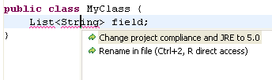
|
|
|
New Type wizards support generics
|
The New Type wizards support J2SE 5.0
generic types in various fields:
- The Name field can include type parameter declarations.
- The Superclass and the implemented Interfaces can
include generic type arguments.

|
|
|
Creating Enumerations and Annotations
|
Enumerations and Annotations can be
created with the new Enum or Annotation wizard:

|
|
|
Guessing for type arguments
|
Code Assist inserts the correct type
arguments when completing a type in the Java editor. Type arguments
that cannot be disambiguated will be selected, and the Tab key
will move from one argument to the next.
In this example String is inserted as the first type
argument, while Number is proposed for the second:
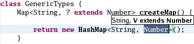
To try out this feature, you need to enable Fill argument names
on the Java > Editor > Code Assist preference page.
|
|
|
Type parameter declaration hiding another type
diagnosis
|
The Java compiler can optionally flag a
type parameter declaration hiding another type.
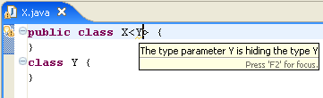
|
|
|
Rename refactoring
|
The Rename refactoring has been extended
to handle renaming of type parameters. 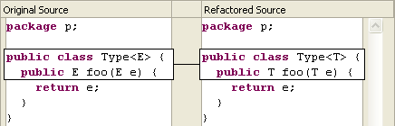
|
|
|
Infer Generic Type Arguments
refactoring
|
With J2SE 5.0, your code can use
generics to enhance readability and static type safety. Refactor
> Infer Generic Type Arguments is a new refactoring that helps
clients of generic class libraries, like the Java Collections Framework, to migrate their code.
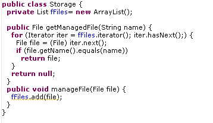
The refactoring infers type parameters for generic types, and will remove any unnecessary casts. It works on
single compilation units as well as on whole packages and Java
projects.
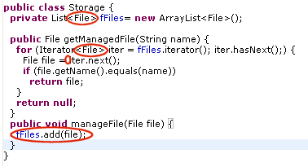
|
|
|
Quick fixes for Generics
|
For unresolved Java types, you now also
get a proposal to create a new type parameter:

Support for Javadoc tags for type parameters has been added. In
J2SE 5.0, you document type parameters using the existing @param tag but
with the name enclosed in angle brackets.
|
|
|
New search result filters for reference search
for parameterized types
|
When searching for references to a
parameterized type such as List<Integer>, the
search result will contain references to all occurrences of List as
well. The search result view now offers two additional filters to
hide matches:
- Filter incompatible matches: this filter hides all results that
are not assignment compatible with the search pattern. For example
when searching for
List<Integer> filtering
incompatible matches will hide List<String>, but
not List<? extends Number>.
- Filter inexact matches: this filter hides all results that don't
exactly match the pattern. For the example above the filter will
also hide
List<? extends Number>.

|
|
|
Completion on annotations
|
Code completion inside a single
member annotation or annotation attribute value is supported.
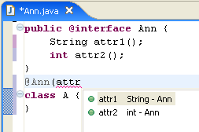
|
|
|
Usage of annotation type as super interface
diagnosis
|
In J2SE 5.0, the Java language allows a
class to implement an annotation type. However this should be
discouraged. The Java compiler optionally flags such usage.
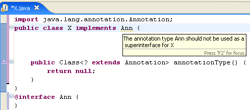
|
|
|
Support for @SuppressWarnings
annotation
|
The J2SE 5.0 @SuppressWarnings
annotation is supported. Recognized warning token names are:
"all", "boxing", "dep-ann", "deprecation", "incomplete-switch", "hiding", "finally", "static-access", "nls", "serial", "synthetic-access", "unqualified-field-access", "unchecked", "unused" and "warningToken". In the
example below, the first field is tagged with the
@SuppressWarnings("deprecation") annotation and no deprecation
warning is reported. The second field is not tagged and a deprecation
warning is reported.
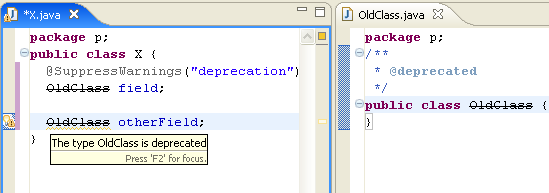
Note that a compiler option controls whether @SuppressWarnings
annotations are active or not. See the preference Java > Compiler > Errors/Warnings > J2SE
5.0 options > Enable '@SuppressWarnings' annotations
By default, unhandled warning tokens are signaled by a warning.
This warning can also be suppressed using the
@SuppressWarnings("warningToken") annotation.
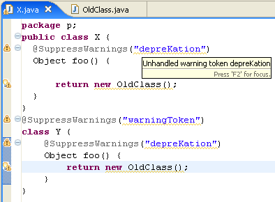
|
|
|
Quick fix
support for
@SuppressWarnings
|
Warnings that can be suppressed using a @SuppressWarning annotation offer a quick fix to do so. Applying quick fix to the unused local warning below 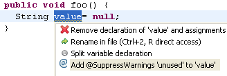
results in:
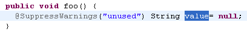
|
|
|
Missing @Override annotation diagnosis
|
The Java compiler can optionally flag a
method overriding a superclass method, but missing a proper @Override
annotation.
Missing @Override annotations can be added using Quick Fix. 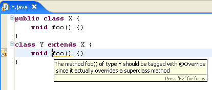
See the preference Java >
Compiler > Errors/Warnings > J2SE 5.0 options > Missing
'@Override annotation |
|
|
Missing @Deprecated annotation diagnosis
|
The Java compiler recognizes the
@Deprecated annotations, and treats them equivalent to the doc comment
/** @deprecated */. It can optionally flag deprecated constructs
missing a proper @Deprecated annotation (to encourage using
annotations instead of doc comment tag).
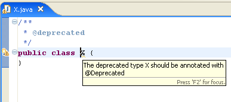
See preference under Java >
Compiler > Errors/Warnings > J2SE 5.0 options > Missing
'@Deprecated' annotation |
|
|
Incomplete enum switch statement diagnosis
|
The Java compiler can optionally flag
incomplete enum switch statements.
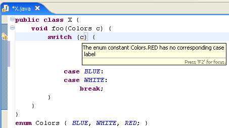
See preference under Java >
Compiler > Errors/Warnings > J2SE 5.0 options > Not all enum
constants covered on 'switch' |
|
|
Compiler diagnosis for 'enum' identifier
|
The Java compiler can find and flag
where 'enum' is used as an identifier. While 'enum' is a legal
identifier up to source level 1.4, but a reserved keyword in 5.0
source. Enabling this warning helps to anticipate source migration
issues. See the preference Java
> Compiler > JDK Compliance > Disallow identifier called
'enum'.
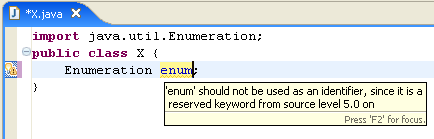
|
|
|
Quick Fix to
create enum constants
|
Quick Fix supports creation of enumeration constants. In the example below the constant BLUE is missing from the enumeration Colors 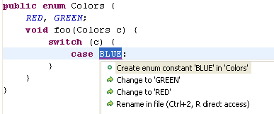
|
|
|
Autoboxing parameter
proposals
|
Proposed parameters include
auto(un-)boxing proposals:

Note: The Java > Editor
> Code Assist > Fill argument names on completion
preference has to be enabled.
|
|
|
Boxing/
unboxing diagnosis
|
The J2SE 5.0 autoboxing capability is
powerful but it can lead to unexpected behavior especially when
passing arguments. The compiler introduces an optional diagnosis that
indicates when autoboxing or autounboxing is performed. In the
following example, one might think that foo(Integer)
would be called, but since autounboxing is performed, foo(int)
is called.
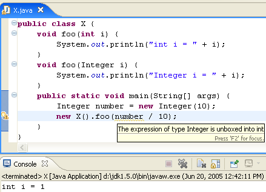
See preference under Java >
Compiler > Errors/Warnings > J2SE 5.0 options > Boxing and
unboxing conversions. |
|
|
Support for J2SE 5.0 in Java editor
|
The Java editor provides syntax coloring for
the new J2SE 5.0 language features. Go to the Java > Editor
> Syntax Coloring preference page to change the colors or to
enable semantic coloring of type variables, annotation elements and
auto(un-)boxed expressions:

|
|
|
New for loop template
|
The foreach
template inserts a new 'for' loop into the code, proposing local Iterable
instances you may want to iterate over:

|
|
|
Convert to enhanced for loop
|
A new Quick Assist (Ctrl+1)
offers to convert old-style for loops over arrays and collections to
J2SE 5.0 enhanced for loops:
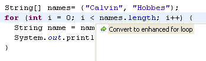
The Quick Fix simplifies the loop to:
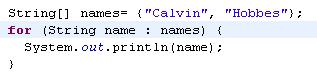
|
|
|
Varargs argument
needing a cast
|
The Java compiler can optionally flag
suspicious varargs method invocations. A null last argument is not
wrapped as a 1-element array as one might expect; adding an explicit
cast makes the intention of the code clear.

The preference setting can be found at Java > Compiler > Errors/Warnings > J2SE
5.0 Options > Inexact type match for vararg arguments.
|
|
|
Completion uses static imports
|
Code completion in the Java editor is
able to process static imports when inferring context-sensitive
completions.
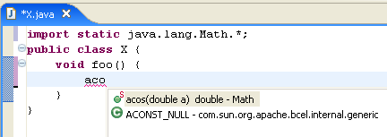
|
|
|
Static import
groups
|
To organize your static imports, create groups for
the static imports and place them where you prefer. You can define an
'others' group to collect up all imports not matched by any other
group:

The 'others' group feature is also available for non-static
imports.
|
|
|
Support for
package-info.java
|
Support has been added for the special
source file package-info.java, which allows annotating and documenting
packages. All JDT tools (code assist, code select, search, outline,
type hierarchies, etc.) can be used in this special compilation unit.
Doc comments inside the package-info.java are processed, and the
syntax and references in standard comment tags are verified.

|
|
|
Code formatter for J2SE 5.0 constructs
|
The code formatter supports all the new
J2SE 5.0 language constructs. Control over how the formatter handles
them are found on the Java > Code Style > Code Formatter
preference page:
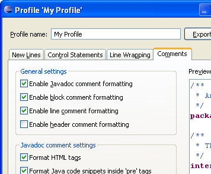
|
|
|
Debugging 5.0 source code
|
You can run and debug 5.0 source code
with a 1.5 JRE. Java debug evaluations support J2SE 5.0 constructs such as
generics and enhanced for loops. |
|
|
Class file naming change for local inner types
|
In 5.0 compliance mode, the Java
compiler generates class files that follow the naming convention
specified in JLS 13.1 (3rd edition) for local inner types. As a
consequence, in the below example, instead of generating a file named X$1$A.class,
it will simply be X$1A.class.
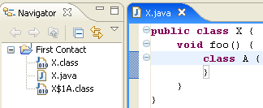
|
|